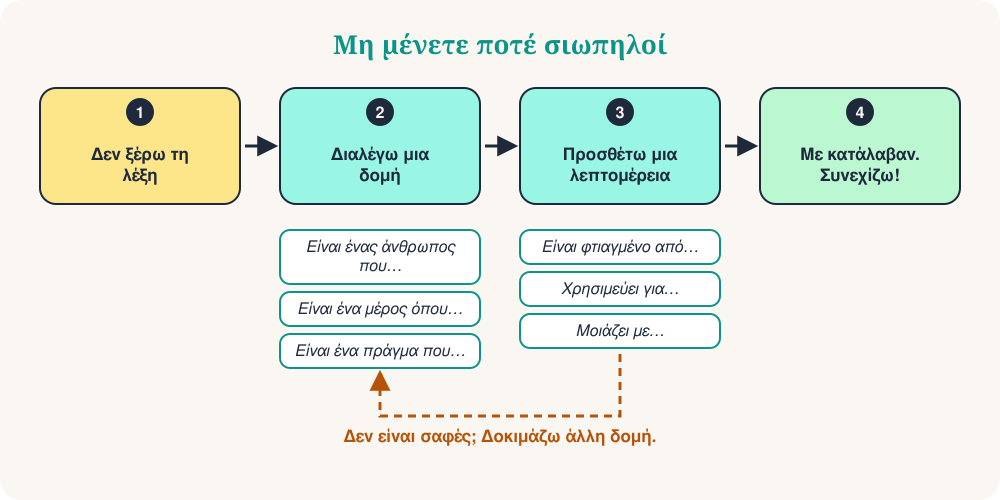

Είστε στη λαϊκή αγορά. Θέλετε να ζητήσετε έναν φορτιστή, αλλά η λέξη χάθηκε. Το μυαλό σας λέει: μετάφρασε! Υπάρχει καλύτερος τρόπος. Μην ψάχνετε τη λέξη που λείπει. Περιγράψτε την.
Είναι πραγματική δεξιότητα και την χρησιμοποιούν και οι φυσικοί ομιλητές. Με 10 έτοιμες δομές μπορείτε να περιγράψετε έναν άνθρωπο, ένα μέρος, ένα αντικείμενο ή μια στιγμή. Συχνά ο άλλος σας δίνει τη λέξη. Μετά συνεχίζετε να μιλάτε.

Οι 10 δομές
Μάθετε τη δομή, όχι τη λέξη. Διαβάστε το παράδειγμα φωναχτά και μετά δοκιμάστε την ίδια δομή με μια νέα λέξη.
| # | Δομή | Παράδειγμα | Βοηθά να περιγράψετε |
|---|---|---|---|
| 1 | Είναι ένας άνθρωπος που… | Είναι ένας άνθρωπος που διδάσκει παιδιά. | έναν άνθρωπο (δάσκαλος) |
| 2 | Είναι ένα μέρος όπου… | Είναι ένα μέρος όπου αγοράζουμε φαγητό. | ένα μέρος (λαϊκή αγορά) |
| 3 | Είναι ένα πράγμα που… | Είναι ένα πράγμα που δείχνει την ώρα. | ένα αντικείμενο (ρολόι) |
| 4 | Είναι κάτι που χρησιμοποιούμε για να… | Είναι κάτι που χρησιμοποιούμε για να γράφουμε. | ένα εργαλείο (στυλό) |
| 5 | Είναι η ώρα που… | Είναι η ώρα που κοιμόμαστε. | μια στιγμή (νύχτα) |
| 6 | Είναι μια μέρα που… | Είναι μια μέρα που γιορτάζουμε. | μια ξεχωριστή μέρα (γιορτή) |
| 7 | Για παράδειγμα… | Μου αρέσει ο αθλητισμός. Για παράδειγμα, το ποδόσφαιρο και το τένις. | μια ιδέα: δώστε παραδείγματα |
| 8 | Σημαίνει… | «Τεράστιος» σημαίνει πολύ μεγάλος. | μια λέξη: χρησιμοποιήστε απλές λέξεις |
| 9 | Μοιάζει με… | Μοιάζει με έναν μικρό υπολογιστή. | την εμφάνιση: κάντε σύγκριση |
| 10 | Πώς λέγεται… στα ελληνικά; | Πώς λέγεται αυτό στα ελληνικά; | οποιαδήποτε λέξη: ζητήστε βοήθεια |
Στην πράξη
Ο σερβιτόρος χαμογελά και σας φέρνει ένα στυλό.
Context: Σε ένα καφέ, θέλετε να υπογράψετε το λογαριασμό.
Ο συνομιλητής σας απαντά: «Η λαϊκή; Είναι δύο δρόμους παρακάτω.»
Context: Σε μια νέα πόλη, ψάχνετε την αγορά.
Ο φίλος σας γελά: «Μια μπανάνα!»
Context: Σε ένα πάρτι, ξεχάσατε τη λέξη.
10 φράσεις επιβίωσης
Είναι μικρές προσθήκες. Βάλτε τες μετά από μια δομή για περισσότερη λεπτομέρεια.
| # | Φράση | Παράδειγμα |
|---|---|---|
| 1 | Είναι ένα είδος… | Είναι ένα είδος ζώου. |
| 2 | Είναι φτιαγμένο από… | Είναι φτιαγμένο από ξύλο ή μέταλλο. |
| 3 | Χρησιμεύει για… | Χρησιμεύει για ταξίδια. |
| 4 | Είναι το αντίθετο της λέξης… | Είναι το αντίθετο της λέξης «ακριβό». |
| 5 | Ακούγεται σαν… | Ακούγεται σαν μουσική. |
| 6 | Έχει… | Έχει τέσσερις ρόδες. |
| 7 | Είναι παρόμοιο με… | Είναι παρόμοιο με ένα αυτοκίνητο. |
| 8 | Έρχεται από… | Έρχεται από την Ιταλία. |
| 9 | Δεν ξέρω τη λέξη, αλλά… | Δεν ξέρω τη λέξη, αλλά είναι για μαγείρεμα. |
| 10 | Μπορείτε να το επαναλάβετε, παρακαλώ; | Συγγνώμη, μπορείτε να το πείτε πιο αργά; |
Η μέθοδος των 3 βημάτων
Ας περιγράψουμε μια ομπρέλα χωρίς να πούμε τη λέξη:
- Κατηγορία: Είναι ένα πράγμα που σε προστατεύει.
- Λειτουργία: Τη χρησιμοποιούμε όταν βρέχει.
- Λεπτομέρεια: Μοιάζει με μια μικρή στέγη.
Τρεις σύντομες προτάσεις. Ο άλλος λέει «Μια ομπρέλα!» και η συζήτηση συνεχίζεται.
Αποφύγετε αυτές τις 4 παγίδες
Γρήγορο κουίζ
❓ Ξεχάσατε τη λέξη «φούρνος (αρτοποιείο)». Ποια πρόταση λειτουργεί καλύτερα;
Το «Είναι ένα μέρος όπου…» είναι η ιδανική δομή για μέρη. Ο ακροατής ακούει «ψωμί» και «μέρος»: ένας φούρνος!
❓ Ποια πρόταση περιγράφει το «ψαλίδι»;
Το ψαλίδι είναι εργαλείο, γι' αυτό χρησιμοποιούμε το «Είναι κάτι που χρησιμοποιούμε για να…».
❓ Ένας φίλος λέει: «Είναι το αντίθετο της λέξης ακριβό.» Ποια είναι η λέξη;
Το αντίθετο του «ακριβό» είναι «φθηνό». Ωραίος τρόπος να εξηγείτε τα επίθετα!
Η εξάσκησή σας των 5 λεπτών
- Κοιτάξτε γύρω σας και διαλέξτε 5 αντικείμενα.
- Περιγράψτε το καθένα με μία δομή, χωρίς να πείτε το όνομά του.
- Προσθέστε μία φράση επιβίωσης στα δύο πιο δύσκολα.
- Ηχογραφηθείτε με το κινητό και ακούστε τη φωνή σας.
- Αύριο επαναλάβετε με 5 νέα αντικείμενα.
Περίληψη
Η ευχέρεια δεν είναι να ξέρετε όλες τις λέξεις. Είναι να μη μένετε ποτέ σιωπηλοί. Μάθετε τις δομές, προσθέστε μια λεπτομέρεια και συνεχίστε να μιλάτε.
“Περιγράψτε το. Μην το μεταφράζετε.”
📚 Για περαιτέρω ανάγνωση
Οι ιδέες αυτού του άρθρου στηρίζονται σε δημοσιευμένη έρευνα και διδακτική πρακτική. Ξεκινήστε από εδώ:
- Bialystok, E. (1990). Communication Strategies: A Psychological Analysis of Second-Language Use. Blackwell.
- Dörnyei, Z., & Scott, M. L. (1997). Communication strategies in a second language: Definitions and taxonomies. Language Learning, 47(1), 173–210.
- Hoey, M. (2005). Lexical Priming: A New Theory of Words and Language. Routledge.
- Laufer, B., & Nation, P. (1995). Vocabulary size and use: Lexical richness in L2 written production. Applied Linguistics, 16(3), 307–322.
- Pawley, A., & Syder, F. H. (1983). Two puzzles for linguistic theory: Nativelike selection and nativelike fluency. In J. C. Richards & R. W. Schmidt (Eds.), Language and Communication (pp. 191–226). Longman.
- Sinclair, J. (1991). Corpus, Concordance, Collocation. Oxford University Press.
- Tarone, E. (1980). Communication strategies, foreign talk, and repair in interlanguage. Language Learning, 30(2), 417–431.
- Wray, A. (2002). Formulaic Language and the Lexicon. Cambridge University Press.